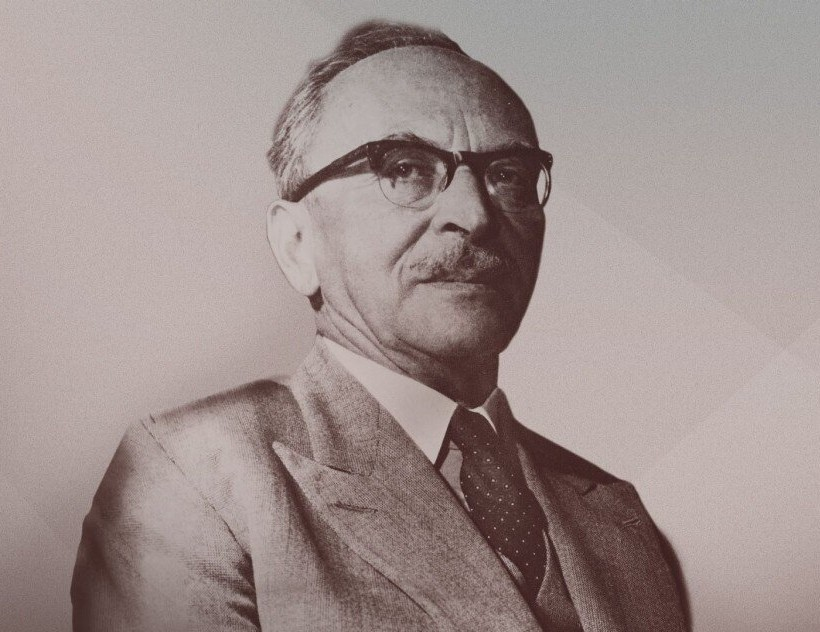
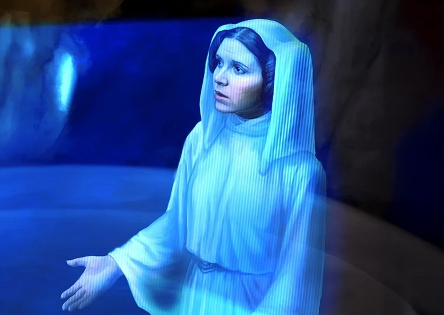
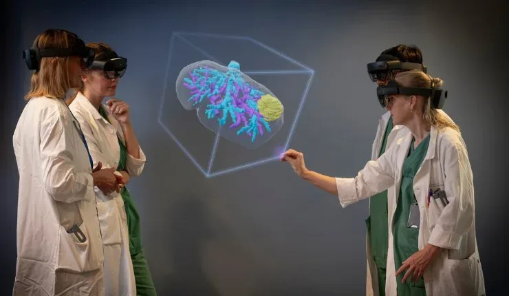
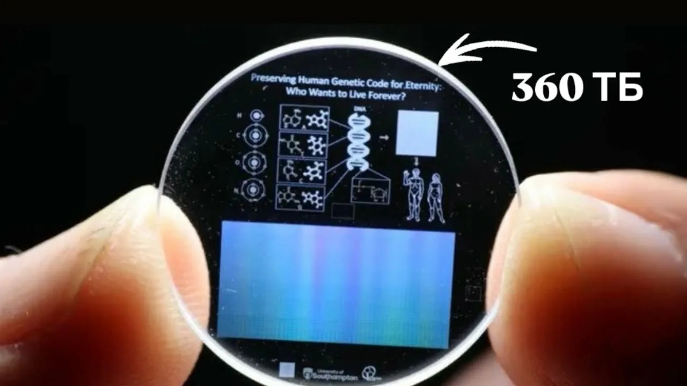
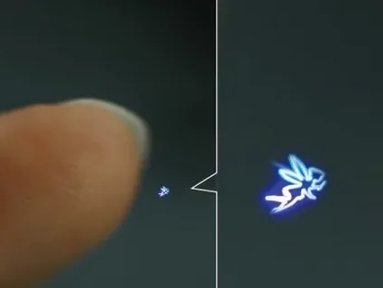
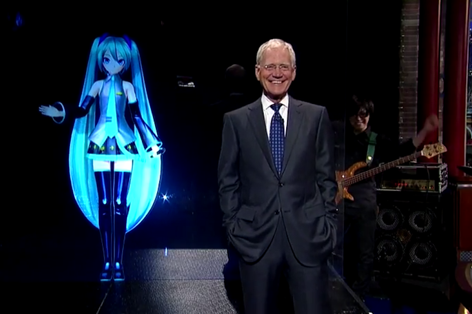
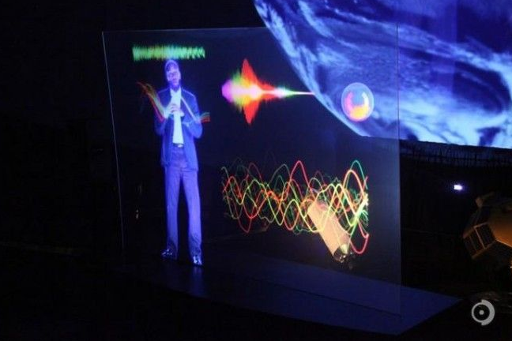
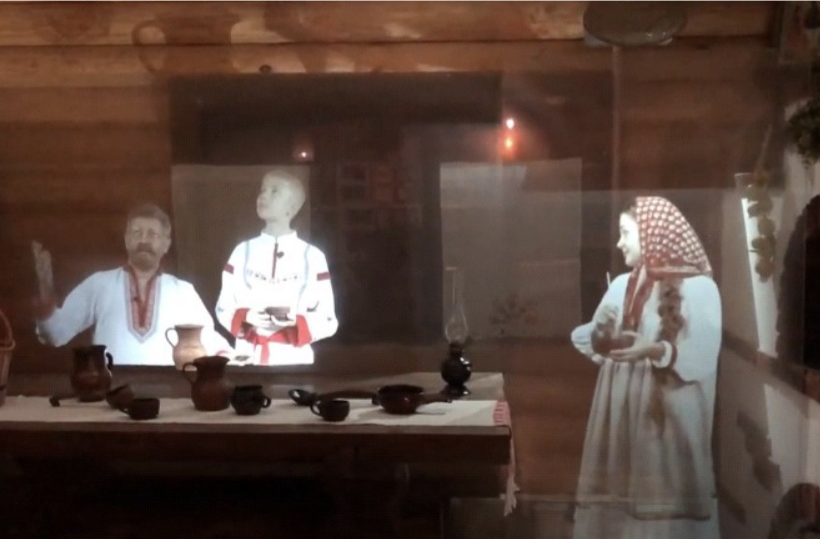

Голограмма — это оптический клон объекта. В отличие от фотографии, она трёхмерна и меняет перспективу при взгляде с разных углов. Часто голограмму путают с 3D-изображением, но 3D объёмно только с одной точки обзора, а голограмма — с любой.
Первую голограмму создал венгерский физик Дэннис Габор в 1947 году в ходе эксперимента по повышению разрешающей способности электронного микроскопа. Настоящая голограмма рождается интерференцией двух лазерных лучей.

Самая известная голограмма в истории кино — принцесса Лея из "Звёздных войн" (1977). Создатели использовали технику с фольгой, изобретённую за 15 лет до этого. Современные художники, как Роберт Лонго, создают парящие 3D-изображения в музеях.

Учёные из Бристольского университета создали технологию осязаемых голограмм. Ультразвуковые динамики создают давление на кожу — вы чувствуете прикосновение к пустоте. Хирурги смогут "ощупывать" органы дистанционно.

Голографическая память — кристалл размером с сахарный кубик вмещает до 1 терабайта данных (200 фильмов в HD). Лазер записывает информацию по всему объёму кристалла. Microsoft уже экспериментирует с такими носителями.

В медицине голограммы помогают планировать сложные операции. Хирург в AR-очках видит 3D-модель сердца или мозга, парящую над столом. В клинике Майо так готовятся к разделению сиамских близнецов.

Японские исследователи из Digital Nature Group создали голограмму, которую можно трогать. С помощью фемтосекундных лазеров они формируют 3D-воксели в воздухе. При прикосновении возникают ударные волны — на ощупь голограмма напоминает наждачную бумагу.
Технология безопасна для человека и открывает путь к тактильному взаимодействию с виртуальными объектами.
Анимированный персонаж-вокалоид, который даёт полномасштабные концерты с живыми музыкантами. Её голограмма проецируется на сцену, а песни синтезируются компьютером. Хацунэ Мику — самый популярный вокалоид в мире, её аудитория — миллионы фанатов.
Такие выступления стирают грань между реальным и цифровым искусством.


В Сан-Франциско можно посетить лекции, которые читают голограммы астронавта NASA Леланда Мелвина и рэпера Моса Дефа. Такие занятия привлекают внимание студентов и делают обучение интерактивным.
Технология позволяет приглашать в аудиторию «цифровых двойников» знаменитостей и экспертов из любой точки мира.
В Московской области, в рамках творческого проекта «Музей молока и молочного сырка РостАгроКомплекс (Б.Ю.Александров)», появился интерактивный голографический экспонат. Проекция актёров рассказывает посетителям о пользе молочной продукции и погружает в крестьянский быт.
Голограмма позволяет транслировать запись бесконечно — актёры записывают историю один раз, а зрители могут смотреть её снова и снова. Кроме голограммы, в музее есть макет коровы в реальную величину и живые телята, которых можно потрогать.

Получайте новые факты прямо на вашу голограмму